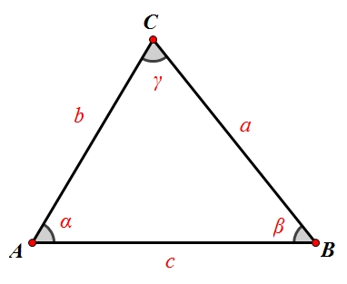
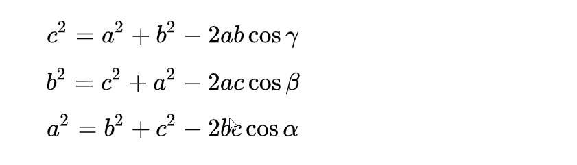
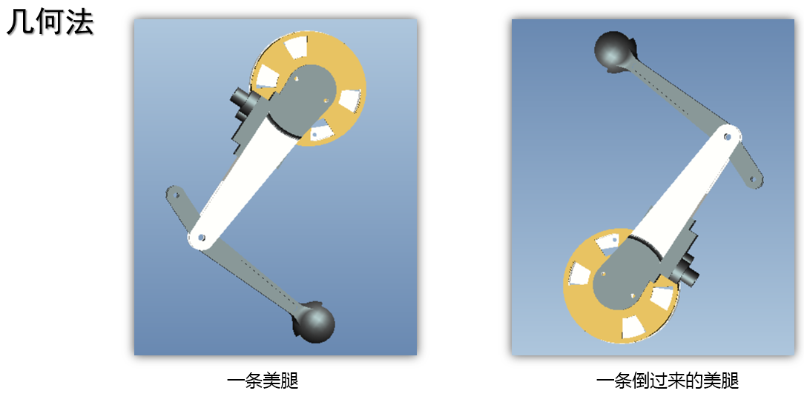
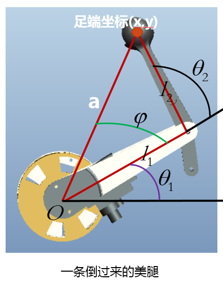
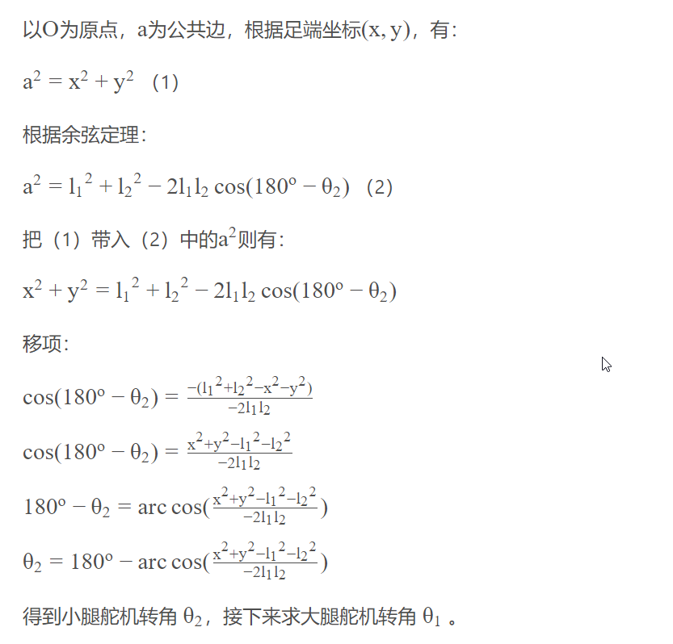
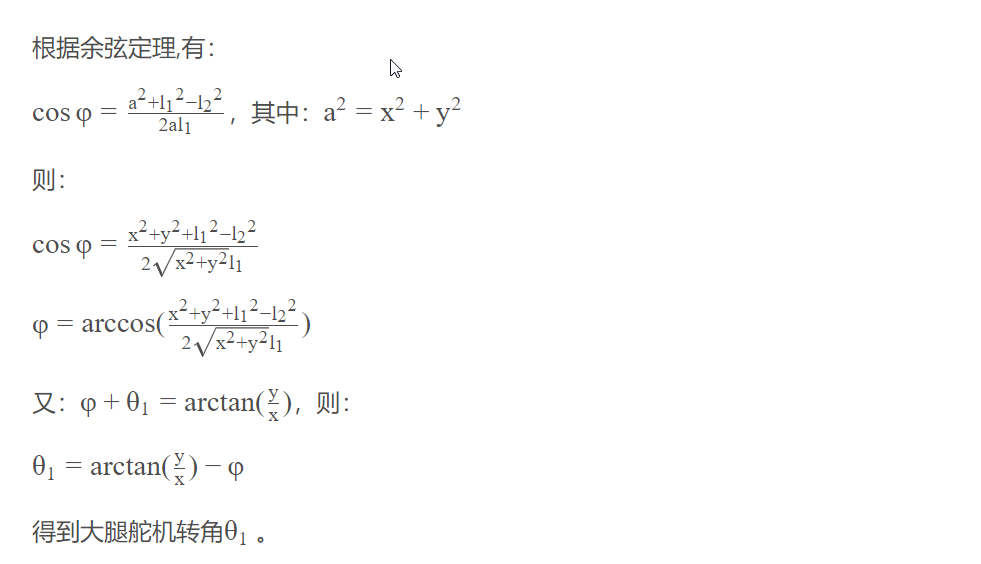

<!DOCTYPE lake>
<h2 data-lake-id="dXvsW" id="dXvsW"><span data-lake-id="ua4d497aa" id="ua4d497aa" style="color: rgb(51, 51, 51)">正解和逆解</span></h2><p data-lake-id="uc6046191" id="uc6046191"><strong><span class="lake-fontsize-12" data-lake-id="u2252f374" id="u2252f374" style="color: rgb(51, 51, 51)">运动学正解</span></strong></p><p data-lake-id="u55b7ebd1" id="u55b7ebd1"><span class="lake-fontsize-12" data-lake-id="u782d6329" id="u782d6329" style="color: rgb(51, 51, 51)">已知：大腿、小腿的角度</span></p><p data-lake-id="u743c886f" id="u743c886f"><span class="lake-fontsize-12" data-lake-id="u3d943fc8" id="u3d943fc8" style="color: rgb(51, 51, 51)">求：足端坐标</span></p><p data-lake-id="u304da505" id="u304da505"><strong><span class="lake-fontsize-12" data-lake-id="u12f7b2df" id="u12f7b2df" style="color: rgb(51, 51, 51)">运动学逆解</span></strong></p><p data-lake-id="u1cfc6175" id="u1cfc6175"><span class="lake-fontsize-12" data-lake-id="u91df854d" id="u91df854d" style="color: rgb(51, 51, 51)">已知：足端坐标</span></p><p data-lake-id="ua20e5bd7" id="ua20e5bd7"><span class="lake-fontsize-12" data-lake-id="uf5bfdd73" id="uf5bfdd73" style="color: rgb(51, 51, 51)">求：大腿、小腿的角度</span></p><h2 data-lake-id="yg63Q" id="yg63Q"><span data-lake-id="u6d8eae7f" id="u6d8eae7f" style="color: rgb(51, 51, 51)">余弦定理</span></h2><p data-lake-id="u033fb1ab" id="u033fb1ab"></p><p data-lake-id="ued07a8ac" id="ued07a8ac"></p><p data-lake-id="u282c8b36" id="u282c8b36"><span class="lake-fontsize-12" data-lake-id="u9a46959b" id="u9a46959b" style="color: rgb(51, 51, 51)">勾股定理是余弦定理的特例</span></p><h2 data-lake-id="Q061f" id="Q061f"><span data-lake-id="ubaca94fa" id="ubaca94fa" style="color: rgb(51, 51, 51)">解算过程</span></h2><p data-lake-id="ue3821c0d" id="ue3821c0d"><span class="lake-fontsize-12" data-lake-id="u2df067fd" id="u2df067fd" style="color: rgb(51, 51, 51)">下图是狗的一条腿部。</span></p><p data-lake-id="u1652941b" id="u1652941b"></p><p data-lake-id="u614a8e3e" id="u614a8e3e"><span class="lake-fontsize-12" data-lake-id="ufbc5c792" id="ufbc5c792" style="color: rgb(51, 51, 51)">机器狗的腿部按图中的位置放置（把腿部倒过来），在腿部所在平面作一个坐标系，如下图所示。大腿和x轴形成的夹角为\theta _1θ1 （大腿的角度），大腿延长线和小腿形成的夹角为$\theta _2θ2$ （小腿的角度）。用几何的方法来求解。</span></p><p data-lake-id="u04169f41" id="u04169f41"></p><h2 data-lake-id="u1W85" id="u1W85"><span data-lake-id="u76fa6c70" id="u76fa6c70" style="color: rgb(51, 51, 51)">求解小腿的角度</span></h2><p data-lake-id="u726312ef" id="u726312ef"></p><h2 data-lake-id="XF7vJ" id="XF7vJ"><span data-lake-id="u9878dfd2" id="u9878dfd2" style="color: rgb(51, 51, 51)">求解大腿的角度</span></h2><p data-lake-id="u358de9a8" id="u358de9a8"></p><p data-lake-id="uaba3a684" id="uaba3a684"><br/></p><p data-lake-id="ucbe6d2ef" id="ucbe6d2ef"><br/></p><p data-lake-id="u28ce9e16" id="u28ce9e16"><span data-lake-id="ue5cdeef6" id="ue5cdeef6">数学工具：</span></p><p data-lake-id="u724983c4" id="u724983c4"><a data-lake-id="u5533aa59" href="https://www.desmos.com/calculator" id="u5533aa59" rel="noopener noreferrer" target="_blank"><span data-lake-id="u82656a62" id="u82656a62">https://www.desmos.com/calculator</span></a></p>